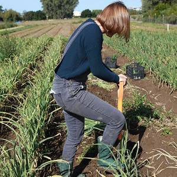
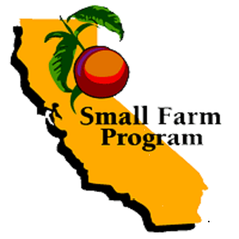
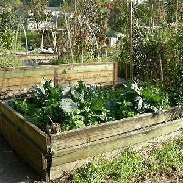
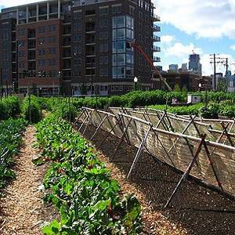
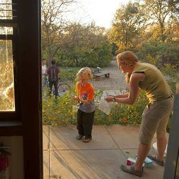
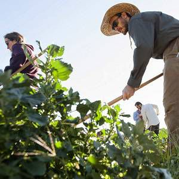

Edible Education, based at UC Berkeley,is a community and undergraduate seminar course featuring sustainable food system guest speakers.
UC Agriculture and Natural Resources (UC ANR) has a Master Gardener Program which advises and supports small-scale community farmers and gardeners.

The UC Small Farms Program encompasses research, advising, and workshops to assist urban, peri-urban, and rural small-scale farmers in California.

UC Cooperative Extension developed an efficient system for documenting UA yields to better assess how much financial savings is occurring.
UC Berkeley’s Patricia Algara helped create a community garden and farmer’s market “starter guide” to help community members begin urban agriculture. More found here.
UC Los Angeles’ interactive website Cultivate LA was created to better assess the state of urban agriculture in Los Angeles.
UC ANR works in collaboration with researchers at UC Davis and local non-profits in Sacramento to build raised beds to overall better assess the safety for urban gardens throughout the city. More information here.

UC ANR UA blog features the latest California urban agriculture news.

Rose Hayden-Smith focuses her work on reporting and writing about youth and community gardening education.

Land access is a significant challenge for many urban farmers. The UC Gill Tract Community Farm is one such example. The film, Occupy the Farm documents the struggle from the farmers’ side. While this article expresses some of the UC’s side of the disagreement. Today, the future of the farm is explained at the Occupy the Farm website.
